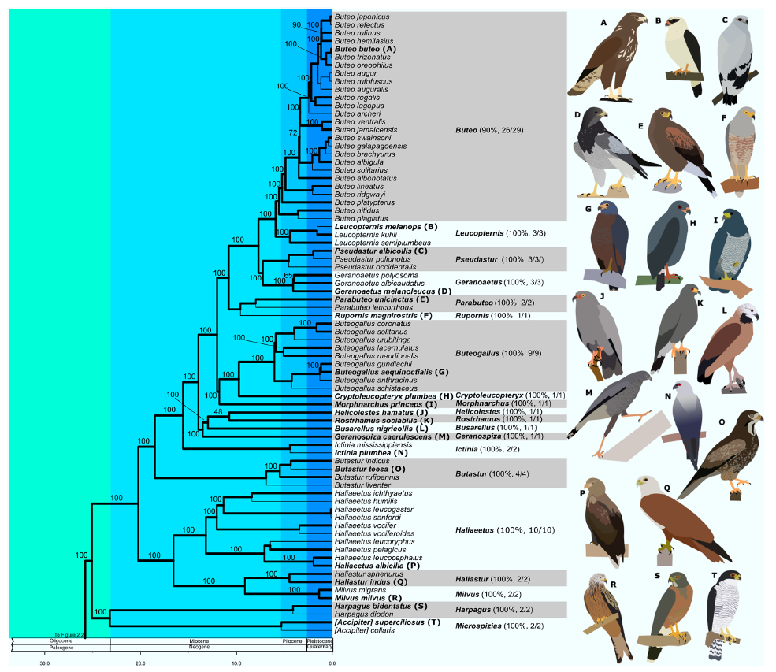
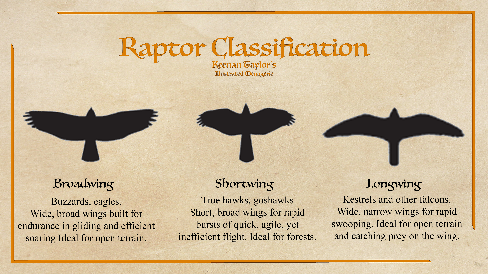
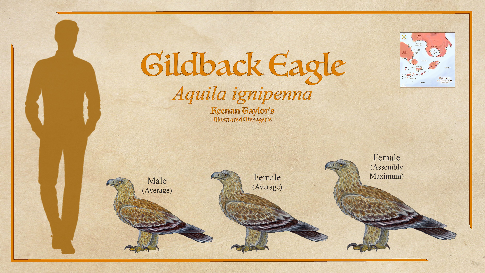
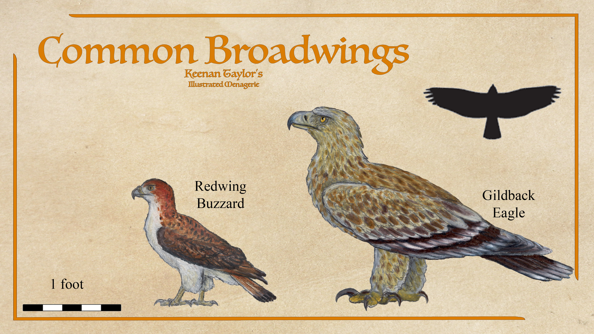
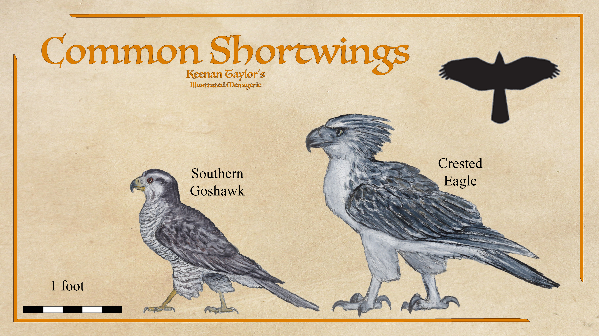
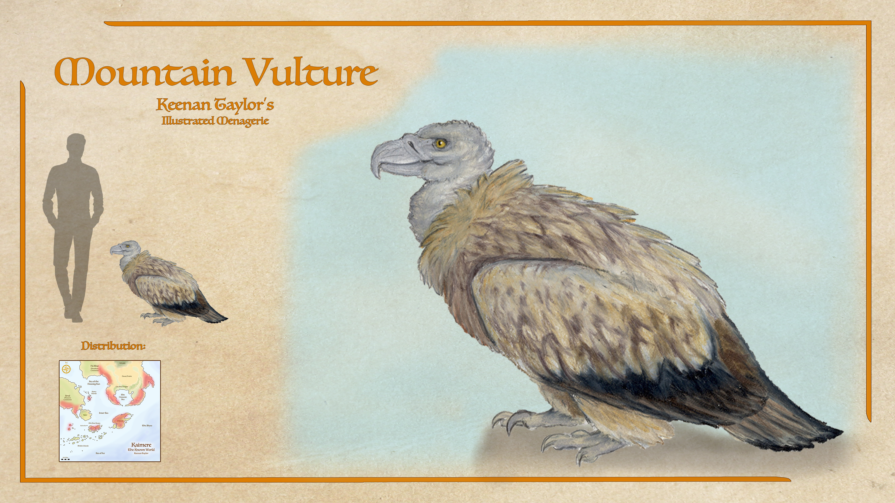
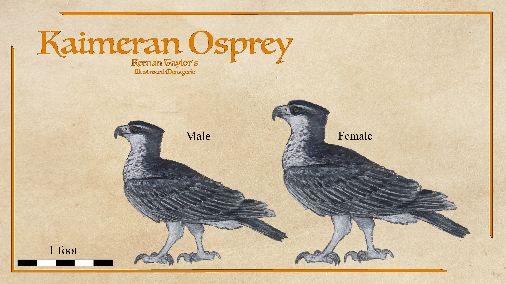
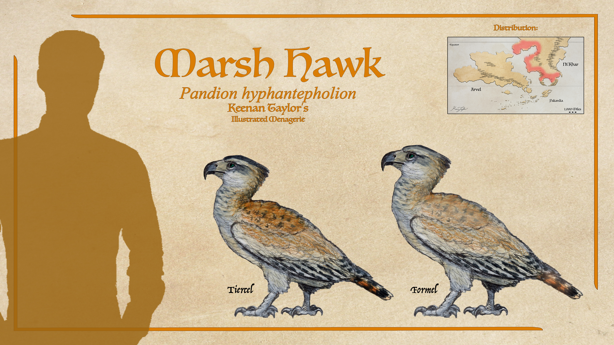
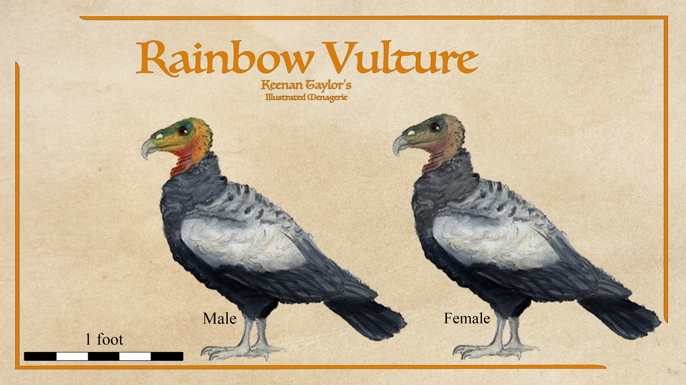
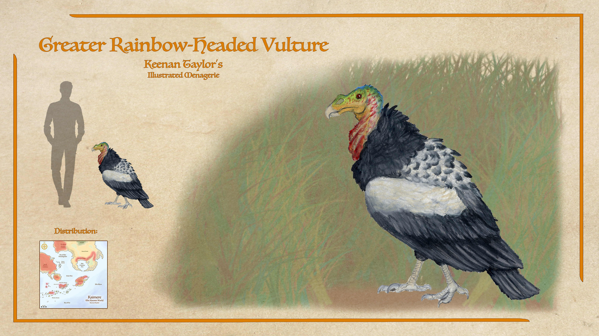

Scientific Classification
| Kingdom | Animalia | Animal | Animals |
|---|---|---|---|
| Phylum | Chordata | Chorda | Corded |
| Class | Aves | Avis | Birds |
| Infraclass | Neognathae | νέος + γνᾰ́θος | New Jawed |
| Unranked | Passerea | Passer | Sparrow-Like |
| Clade | Telluraves | Tellūs + Avis | Land Birds |
| Clade | Afroaves | Africa + Avis | African Birds |
| Order | Accipitriformes | Accipiter + Fōrmis | Hawk Forms |
Taxonomic note: The Accipitriformes are a major order of diurnal birds of prey. Earthly classifications recognize several principal living families within the order, including Accipitridae, containing hawks, eagles, kites, harriers, buzzards, and Old World vultures; Pandionidae, containing the ospreys; and Sagittariidae, represented by the secretarybird. The placement of the Cathartidae, or New World vultures, has historically been disputed. They are sometimes treated as a separate order, Cathartiformes, although their broader evolutionary relationship with accipitriform birds remains close.
01 · INTRODUCTION
Overview

The Accipitriformes are one of the most important radiations of diurnal birds of prey on Kaimere. On Earth, the order includes the hawks, eagles, kites, harriers, buzzards, Old World vultures, ospreys, and several other specialized raptors. In Kaimere, these lineages entered an environment considerably different from that of Earth, where they faced competition from enormous pterosaurs, particularly the bathawks, as well as terrestrial predators and other aerial hunters. This competition profoundly shaped their evolution and distribution.
Accipitriformes are distinguished from the falcons and other longwing raptors by their generally greater emphasis on lifting power, maneuverability, powerful feet, and ecological versatility. Although the precise morphology varies enormously between species, most accipitriforms possess strongly hooked bills, powerful grasping feet, exceptional vision, and wings adapted either for soaring or rapid maneuvering. Their success has traditionally depended upon the ability to exploit niches unavailable to larger predators, rather than simply becoming the largest predators in their environments.
The Kaimeran accipitriform radiation includes soaring eagles and buzzards, highly maneuverable forest hawks, fish-specialized ospreys, and several lineages of vultures. Some species have become highly specialized for the peculiar conditions of Kaimere, while others retain broadly recognizable ecological roles inherited from their Earth ancestors.
Their history on Kaimere is therefore one of repeated competition and ecological displacement. Large soaring raptors have repeatedly encountered competition from pterosaurs, particularly bathawks occupying the same aerial hunting spaces. Small and maneuverable hawks have generally fared much better, since dense forests and other cluttered environments provide protection from large aerial predators. Scavenging vultures have likewise been successful because their feeding strategy reduces direct competition with predatory pterosaurs. The result is a modern accipitriform fauna in which shortwing forest hawks are the most abundant predatory raptors, while broadwing eagles and buzzards are disproportionately concentrated in highlands and other regions where bathawks are less dominant.

Kaimeran falconers traditionally divide predatory birds into three broad flight morphs: broadwings, shortwings, and longwings. These categories are practical rather than strictly taxonomic. Broadwings include most eagles, buzzards, and other soaring species. They rely upon gliding and thermal or ridge lift and are particularly effective when prey is abundant across open terrain. Shortwings include the true hawks and other highly maneuverable raptors. Their relatively short, rounded wings allow rapid acceleration and extremely tight turns, making them particularly successful in forests. Longwings are represented principally by falcons and other high-speed pursuit birds.
This distinction is especially important on Kaimere because the open sky is not necessarily a safe environment for a bird of prey. A broadwing flying high above an open landscape may be an obvious target for a bathawk. A shortwing hunting beneath a forest canopy, however, occupies an aerial environment in which the much larger pterosaurs have considerably less maneuverability. Consequently, shortwings have become the dominant predatory raptors across much of the Known World.
02 · DEEP TIME
Evolutionary History
Origins After the Cretaceous on Earth
The evolutionary history of the Accipitriformes begins shortly after the end-Cretaceous extinction approximately 66 million years ago. As the extinction eliminated many dominant terrestrial and aerial predators, numerous surviving bird lineages underwent rapid diversification. The ancestral accipitriforms were probably relatively generalized woodland predators rather than the enormous eagles and specialized vultures known today.
Their early ecological strategy appears to have emphasized flexibility. Small terrestrial vertebrates, insects, and other forest prey could be exploited without requiring the extreme specialization seen in later raptors. This generalized ancestry provided the foundation for the subsequent diversification of the group.
During the Eocene, accipitriforms began dividing into increasingly specialized ecological types. Woodland predators became more maneuverable, while other lineages adapted to open habitats and began taking advantage of soaring flight. Primitive scavenging forms also appeared, establishing an ecological pathway that would eventually produce the highly specialized vultures.
The expansion of open habitats during the Eocene — Oligocene transition, approximately 34 million years ago, was particularly important. The development and spread of grasslands created enormous new hunting grounds while simultaneously favoring birds capable of exploiting thermal and ridge lift. The major lineages of modern accipitriforms appear to have diversified during this period, followed by further expansion during the Miocene.
The Kaimeran Environment
The accipitriform radiation encountered a fundamentally different selective environment when its descendants became established on Kaimere. The skies were not controlled exclusively by birds. Large pterosaurs remained major aerial predators, and eventually several lineages evolved into highly effective terrestrial and aerial hunters.
The most important competitors were the bathawks, predatory tapejarid pterosaurs that specialized in hunting other flying animals. Their presence made open-air flight dangerous for many raptors. Large birds that depended upon slow soaring were particularly vulnerable because they could be detected from considerable distances.
This created a strong ecological division within the Kaimeran accipitriforms. Raptors that could remain within forests, woodland, river thickets, and other structurally complex habitats had a refuge unavailable to many large pterosaurs. Raptors that remained dependent upon open-air soaring were forced toward habitats where bathawk densities were lower, particularly mountains and highlands.
This pressure helps explain why the shortwing strategy became so successful on Kaimere. The evolution of compact wings and powerful burst flight allowed hawks to operate in environments that were difficult for large pterosaurs to exploit. Forests became aerial refuges as well as hunting grounds.
The Arrival of the First Teratorns
Following the expansion of closed forests in the Known World, the Portal introduced flora and fauna from middle Miocene South America. It was during this harvest, the first teratorns were intrduced to Kaimere.
Teratornids or teratorns are birds of prey that lived in North and South America from the Late Oligocene to the Late Pleistocene. Teratorns had long beaks, wide gapes, and flexible skulls to enable them to swallow some prey items whole. Their elongated legs allow them to actively stalk prey on the ground, makign them often successful predators of small-to-medium vertebrates and often swallowed their prey whole, while still engaging in opportunistic scavenging. This pattern holds true on Kaimere, and is one of the keys to their success.
They did well enough in the Warring Clades Period, were quite successful during both the Great Drying and Anchored Period, diversifying into numerous species. Though they took a hit of diversity in its aftermath, with only Archornis itself surviving at least within the known world, they have since become very successful mesopredators.
The Arrival of the Ospreys
An important stage in Kaimeran accipitriform evolution occurred with the arrival of ospreys during the middle Miocene. The Kaimeran osprey was introduced during the first harvest following the Dynastic Extinction, approximately 14.2 million years ago.
Its arrival placed a highly specialized piscivore into Kaimere's rivers, lakes, wetlands, and coastal environments. Rather than directly competing with most terrestrial raptors, ospreys exploited fish, allowing them to occupy an aerial hunting niche largely independent of the prey base used by hawks and eagles. The presence of numerous aerial predators nevertheless created a new selective pressure. Many ospreys evolved elaborate roofed nests, providing protection from pterosaurs that could otherwise raid exposed nests. The construction of these nests became an important part of their adaptation to Kaimere.
The Evolution of the Vultures
The history of vultures on Kaimere is considerably more recent than that of the ancestral accipitriform radiation. Before their arrival, aerial scavenging was largely performed by enantiornithian birds and azdarchid pterosaurs. Enantiornithians were particularly important scavengers. Despite their relatively primitive position within bird evolution, Kaimeran forms were capable fliers and competed aggressively at carcasses. Some possessed serrated teeth and clawed wings, allowing them to physically contest other scavengers.
The arrival of true vultures eventually displaced most of these aerial scavengers. The first New World vultures were harvested during the late Miocene of South America. Old World vultures arrived considerably later, with introductions from southeastern Asia and northern Africa approximately 250,000 years ago. The surviving Old World vultures on Kaimere belong to the genus Gyps.
Unlike their Earth counterparts, the New World and Old World vultures now overlap geographically on Kaimere. Their evolutionary histories remain distinct, but they have divided much of the available scavenging habitat. Forest-adapted New World vultures rely heavily upon smell, while Old World vultures have retained a primarily visual method of locating carrion and generally dominate open landscapes. This division has allowed both lineages to flourish.
The expansion of enormous herbivores, particularly titanosaurs and other Kaimeran megafauna, created an enormous and dependable supply of carrion. This favored the evolution of large, social vultures capable of traveling considerable distances to carcasses.
The Rise of the Shortwings
The shortwing radiation represents one of the clearest examples of Kaimerean ecological specialization. True hawks evolved increasingly powerful burst flight, allowing them to accelerate rapidly through dense vegetation and execute sharp turns around trees and other obstacles. This strategy came at an energetic cost. Shortwings are inefficient compared with long-distance soaring birds and cannot remain airborne indefinitely without considerable expenditure of energy. Their success therefore depends upon brief periods of intense activity separated by periods of rest.
On Kaimere, however, this tradeoff became advantageous. The forest canopy protected them from many of the largest aerial predators, while the abundance of small and medium-sized prey provided sufficient food to support their energetically expensive hunting style. The modern southern goshawk represents the culmination of this strategy. Its relatively small size, maneuverability, intelligence, and ability to coexist with other raptors have made it one of the most successful and widespread birds of prey in the Known World.
Some eagles subsequently converged upon the shortwing condition. The crested eagle is particularly notable because its ancestry places it among the eagles, yet its ecological and aerodynamic characteristics are closer to those of a large forest hawk. This demonstrates that Kaimerean flight morphs represent functional adaptations rather than rigid taxonomic categories.
Modern Accipitriformes
The modern accipitriform fauna of Kaimere is therefore the product of several successive evolutionary pressures rather than a single adaptive radiation. The original post-Cretaceous predators diversified into forest hunters, soaring predators, fish specialists, and scavengers. After entering Kaimere, these lineages encountered an aerial ecosystem dominated in part by giant pterosaurs, forcing them toward new ecological strategies.
Shortwings became dominant in forests because maneuverability offered protection from large aerial competitors. Broadwings survived most successfully in highlands and other regions where bathawks were less common. Specialized fish hunters occupied aquatic environments, while vultures exploited the enormous carcass resources generated by Kaimere's megafauna.
The result is a distinctly Kaimeran accipitriform radiation. Its members retain the fundamental characteristics of their Earth ancestry—keen eyesight, grasping feet, hooked bills, powerful flight, and predatory or scavenging lifestyles—but their modern distribution and diversity reflect millions of years of competition with pterosaurs and adaptation to Kaimere's unusually productive ecosystems. In this sense, the history of the Accipitriformes on Kaimere is principally a history of ecological partitioning: rather than defeating the world's other aerial predators through sheer size, they survived by becoming better adapted to the places and resources those predators could not efficiently exploit.
03 · SPECIES ACCOUNTS
Known Diversity
The following accounts document representative accipiters and vultures recorded in the encyclopedia. Select a species to consult its individual natural history and descriptive account.
Gildback Eagle

Aquila ignipenna
The gildback eagle has have impressive speed and endurance, being one of the few raptors able to outpace a bathawk in open flight, and their range includes many open lowland territories. Their nests are still a point of vulnerability. It is assumed that they represent simply the most recent of large eagles to have short-term success but are eventually doomed to similar fates of earlier large eagles to eventually be outcompeted by bathawks, though given their current population and success, others think they may have found an equilibrium, especially since they have been present for a million and a half years and show no sign of decline, unlike other large eagles that have gone extinct despite more recent harvest. Even so, they nest in the mountains and are most common in places where tapejarids do not frequent, so they ultimately aren't as much of an exception to the rule as Kaimeran falconers espousing the prestige of the gildbacks might suggest.
Read species article →Redwing Buzzard

Buteo sp.
The redwing buzzard is another popular bird, and a strong bird to begin training with if one does have open territory to hunt in. They are unusually common for a broadwing, easily bonded with, and readily breed in captivity. Because of their intermediate size, they are able to go after a range of small game up to the size of a rabbit. They are quite agile and easily train to return to their falconer if a threat is spotted, excellent traits for a bird out in the open. They have been in the known world for a million and a half years, and are a species of Buteo endemic to Kaimere. Their anatomy is intermediate: broad wings for gliding, but not so long that they become unwieldy; a moderate tail for steering; stout legs; and a sturdy, compact body. The redwing pattern on the wings is conspicuous in flight but the bird's overall build is practical rather than ornate. Compared with shortwings, it is more of a glider; compared with true eagles, it is lighter, quicker to train, and less dependent on large uplift.
Read species article →Crested Eagle and Southern Goshawk

Scientific placement to be confirmed
Crested eagles are often classified as shortwings by Kaimeran falconers as, although they are eagles, their short wings and burst flight is much more in line with shortwing training and practice. They are found in closed forests, broken uplands, open montane forests, and forested slopes where large prey is present but the airspace is not dominated by pterosaurs. Anatomically, it is a powerful raptor with a deep chest, heavy shoulders, a pronounced crest, and broad but not overly elongated wings. The legs are strong and the feet large, but the bird remains lighter and more maneuverable than most eagles of comparable size.
The most common bird for falconers to train and keep is the southern goshawk, the quintessential shortwing. These are burst fliers and astonishingly agile. Despite being so athletic in short distance flight, they are quite content to lounge about. They live in dense forests, woodland edges, river thickets, and mixed settlement-forest mosaics across the Known World. Its anatomy is built for burst flight: short rounded wings, a long balancing tail, a compact torso, and powerful legs. The chest is muscular but not bulky, and the bill is small and sharply hooked. It is a bird of fast turns, sudden ambushes, and short chases through cluttered habitats. Compared with eagles, it is much lighter and more agile; compared with kestrels, it is sturdier and less specialized for hovering.
Read Crested Eagle article → Read Southern Goshawk article →Mountain Vulture

Gyps sp.
With a wingspan of 15 feet and weighing up to 50 pounds. The mountain vulture is one of the largest flying bird of Kaimere aside from the teratorns. They inhabit the great mountain systems of Arvel and Ni'Khar, nesting on inaccessible cliffs overlooking valleys, and high plateaus. During winter they descend into foothills and open steppe following migrating herbivores. Their wings are exceptionally elongated even for an old world vulture, possessing a very high aspect ratio that allows effortless soaring upon weak mountain thermals and ridge lift.
Read species article →White Vulture

Gyps sp.
With a wingspan of 15 feet and weighing up to 50 pounds. The mountain vulture is one of the largest flying bird of Kaimere aside from the teratorns. They inhabit the great mountain systems of Arvel and Ni'Khar, nesting on inaccessible cliffs overlooking valleys, and high plateaus. During winter they descend into foothills and open steppe following migrating herbivores. Their wings are exceptionally elongated even for an old world vulture, possessing a very high aspect ratio that allows effortless soaring upon weak mountain thermals and ridge lift.
Read species article →Black Vulture

Gyps sp.
The forest or black vulture is the oldest of the old world vultures to arrive in Kaimere, coming from the Middle Miocene harvest of southern Africa. With stocky wings to aid them flying through the denser forests of the Known World. They share their niche with carrion crows. They tend to dominate crows but give way to jay crows and the much larger ravens. They inhabit temperate forests, subtropical woodland, swamp forests, and riverine forests throughout the Known World. Unlike other griffons, the black vulture possesses relatively short, broad wings with rounded tips, allowing greater maneuverability beneath broken canopies and around towering forest trees. Although less efficient soarers than prairie species, they can exploit canopy openings and titan trails to travel surprisingly efficiently. Their tail is proportionately longer and more flexible, improving steering through wooded terrain.
Read species article →Red Vulture

Gyps sp.
The red vulture is the most successful representative of the old world vultures, with the highest population and widest range. And alongside the lesser rainbow vulture, being what most Kaimerans think of when they imagine a vulture. They are especially intelligent animals, showing a surprising amount of innovation and creativity compared to their relatives. The red vulture is a highly social animal, with their flocks being extremely complex. At a carcass dominated by these animals reaffirming social status is often more important than getting a meal. Perhaps the most interesting behavior is shown by these animals and the populations of Kaimeran forests.
Read species article →Kaimeran Osprey

Pandion kaimerensis
In Khalin schools, the most prized bird is the Kaimeran osprey. This species of osprey has been a resident of Kaimere since the middle Miocene, being included in the first harvest following the Dynastic Extinction. Although superficially similar to seahawks of Earth, they are usually given their own species designation if not genus given their adaptations to the context of Kaimere. They are arguably broadwings, though their wings converge in shape closer to falcons, which limits their flight efficiency, but not so much that it compromises the weight they can carry. Like Earth seahawks, they hunt fish in a range of freshwater and marine habitats. While many Khalin get much more efficiency from fishing with long nets, osprey fishing is a very popular and prestigious sport. They are the largest seafaring raptor, as tapejarids are quite common in the seas, but their agility does give them an edge. They also build highly complex roofed nests, sometimes compared to the lodge of a beaver, which allows them to roost safely in a way that many raptors struggle to do.
Read species article →Marsh Hawk

Pandion hyphantepholion
Marsh hawks are one of several osprey species found in the Known World. Like many raptors, the female (formel) is larger than the male (tiercel) though this dimorphism is not as exaggerated as in many birds of prey. Males can also be distinguished by darker reddish feathers on their backs and tails, and a pronounced black brow. Their relative, the Kaimeran osprey, has a much wider range as a marine species. These osprey evolved alongside the arboreal pterosaurs that dominate the skies and have evolved to construct roofed woven nests in response. With their roofed nests, they and their young are kept safe from the arboreal bathawk pterosaurs that raid the nests and kill other raptors like eagles and hawks.
Read species article →Rainbow Vulture

Scientific placement to be confirmed
The rainbow-headed vultures can be found in two species, greater and lesser. The lesser rainbow vulture is one of the most common vulture of the Known World. Their sense of smell is legendary, and their social instinct make them easily bond with unrelated animals, making them surprisingly good pets. Vultures generally don't seem to attract the vitriol of tapejarids as much as eagles do. The most successful vultures are all quite social species, which does seem to deter the pterosaurs that might otherwise predate upon them. As they are generally scavengers, most falconers don't bother with vultures, but the keen nose and intelligence of the rainbow vulture does mean it has a distinguished place among scouts.
Read species article →Greater Rainbow Vulture

Scientific placement to be confirmed
The greater rainbow vulture is fairly rare, although they range throughout the forests of the Known World. With a wingspan of 12 feet, and weighing up to 40 pounds. They are an imposing presence at any forest carcass. The skull is proportionately much larger than that of the lesser species, supporting a longer and more powerfully hooked beak capable of opening carcasses that smaller vultures cannot penetrate. The cervical musculature is correspondingly enlarged, enabling prolonged tearing of thick hide. Its olfactory apparatus is among the most sophisticated known in any bird. Expanded nasal chambers occupy nearly one-third of the skull, while exceptionally large olfactory bulbs process airborne scent molecules with remarkable sensitivity. The wings are broader than those of the lesser rainbow-headed vulture, allowing prolonged soaring above forest canopies despite the bird's enormous mass.
Read species article →Horned Vulture

Scientific placement to be confirmed
The horned vulture is a combative species of new world vulture found on the Houze Prairie and grasslands of the Crescent. Their population is fairly low due to competition with the more successful old world species in this open environment. The most obvious anatomical feature is the enlarged keratinous horn projecting from the upper beak. This structure develops fully only in adults and functions both in visual display and dominance contests. Individuals frequently engage in ritualized pushing contests, attempting to shove rivals away from carcasses using the reinforced beak and horn. Unlike rainbow vultures, horned vultures rely primarily upon vision rather than smell. Their eyes are proportionately enormous, providing exceptional long-distance detection of feeding activity.
Read species article →Golden Teratorn

Archornis sp.
The most numerous is the golden teratorn. These birds are especially common on the Houze Prairie, but can be found on most grasslands of Ni'Khar. This species possesses the longest legs relative to body size within the family, allowing sustained pursuit of prey over long distances. The pelvis is unusually narrow and the hindlimb musculature highly developed, producing a remarkably efficient running gait despite its enormous size. Its wings are somewhat narrower than those of the black teratorn, reflecting a greater reliance upon active flight and frequent movements between hunting territories.
Read species article →Red Teratorn

Archornis sp.
The most widespread and smallest is the blood or red teratorn. These birds can be found in wetlands and mosaic rainforests. Although the smallest Kaimeran teratorn, they still often reach 70 — 80 pounds, making them an imposing presence in their environment. They are often hunting along forest edges where open ground alternates with dense vegetation. Compared to other teratorns, the red teratorn has proportionately shorter wings and a longer tail, providing greater maneuverability during low-altitude flight through broken woodland and marshes.
Read species article →Black Teratorn

Archornis sp.
The largest is the black teratorn. These massive birds are similar in proportion to Argentavis, with 20 foot wingspan and weighing upwards of 150 pounds. They are the heaviest flying bird in Kaimere, and the only one known to regularly hunt children. The black teratorn is rare yet found throughout the entirety of the known world as long as the habitat is open enough for them to take off.
Read species article →04 · CLASSIFICATION
Taxonomic Notes
The Accipitriformes are traditionally recognized as an order of predatory birds containing several major living families. The principal family is Accipitridae, which includes hawks, eagles, kites, harriers, buzzards, and Old World vultures. Pandionidae, containing the ospreys, is generally treated as a separate family within the order. Sagittariidae, represented by the secretarybird on Earth, is likewise associated with the accipitriform radiation.
The placement of Cathartidae, the New World vultures, has historically been more controversial. Some classifications elevate them to their own order, Cathartiformes, but molecular evidence places them close to the broader accipitriform radiation. On Kaimere this distinction remains relevant because New World vultures have undergone a particularly important independent history following their introduction to the planet. Their closest surviving relatives on Kaimere are associated with the Teratornithidae, rather than simply representing another branch of the Old World vulture radiation.
Kaimeran falconers employ a practical classification that differs from formal taxonomy. Rather than grouping birds according to ancestry, they frequently divide raptors according to three major wing and flight types: broadwings, shortwings, and longwings. These categories are ecological and functional rather than taxonomic.
Broadwings include most eagles, buzzards, and many other soaring raptors. Their wings favor gliding and sustained flight, allowing them to exploit thermals and other sources of atmospheric lift. Shortwings include the true hawks and other highly maneuverable forest raptors. Their relatively short, rounded wings allow rapid acceleration and tight turns within cluttered environments. Longwings include the falcon-like pursuit specialists, whose elongated wings support high-speed flight across open country.
This terminology is particularly useful on Kaimere because the three flight strategies correspond to different degrees of vulnerability to predatory pterosaurs. It is therefore common for Kaimeran falconers to classify an eagle as a "shortwing" when its behavior and flight mechanics resemble those of a goshawk, even though it remains taxonomically an eagle.